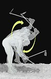

digging

Definition: Digging, also referred to as excavation, is the process of using some implement such as claws, hands, manual tools or heavy equipment, to remove material from a solid surface, usually soil, sand or rock on the surface of Earth. Digging is actually the combination of two processes, the first being the breaking or cutting of the surface, and the second being the removal and relocation of the material found there. In a simple digging situation, this may be accomplished in a single motion, with the digging implement being used to break the surface and immediately fling the material away from the hole or other structure being dug.
Source: Wikipedia
Wikipedia Page (Something wrong with this association? Let us know.)
Wikidata Page (Something wrong with this association? Let us know.)